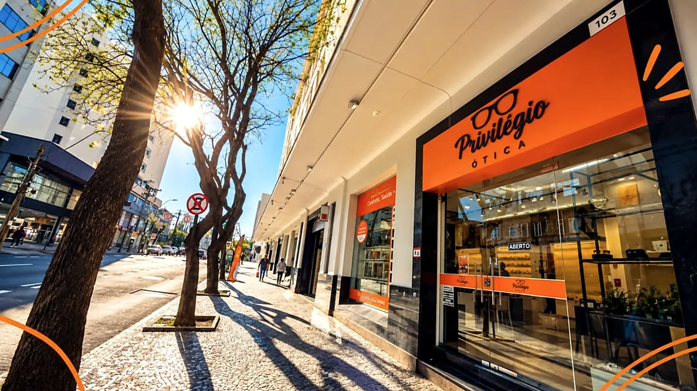
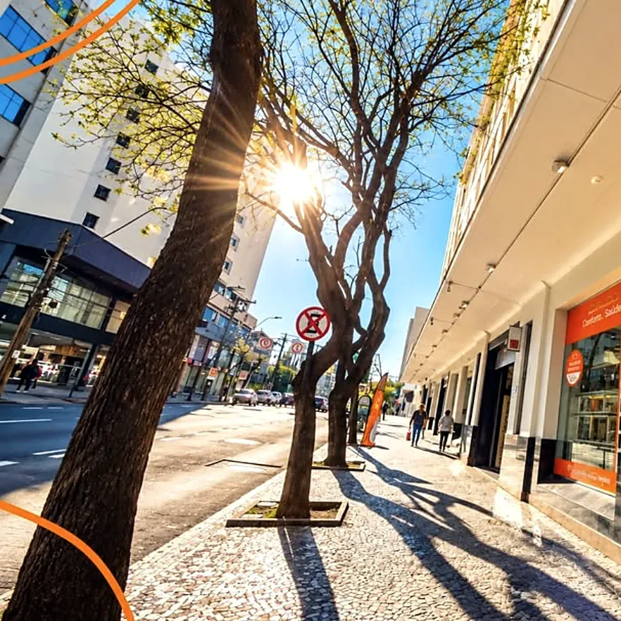
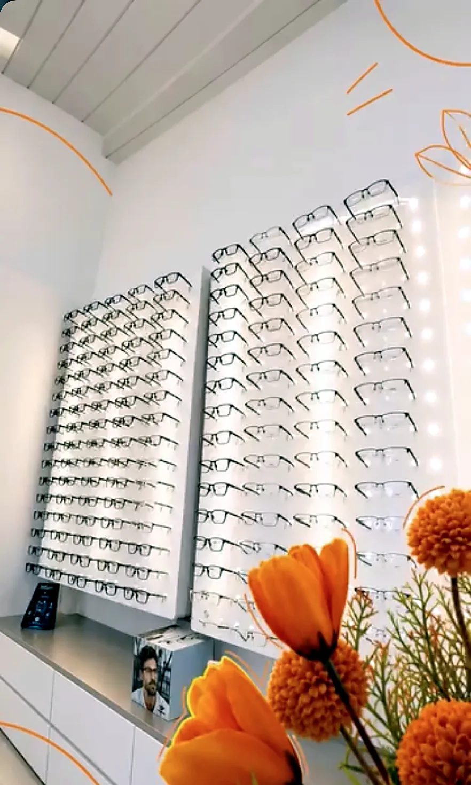
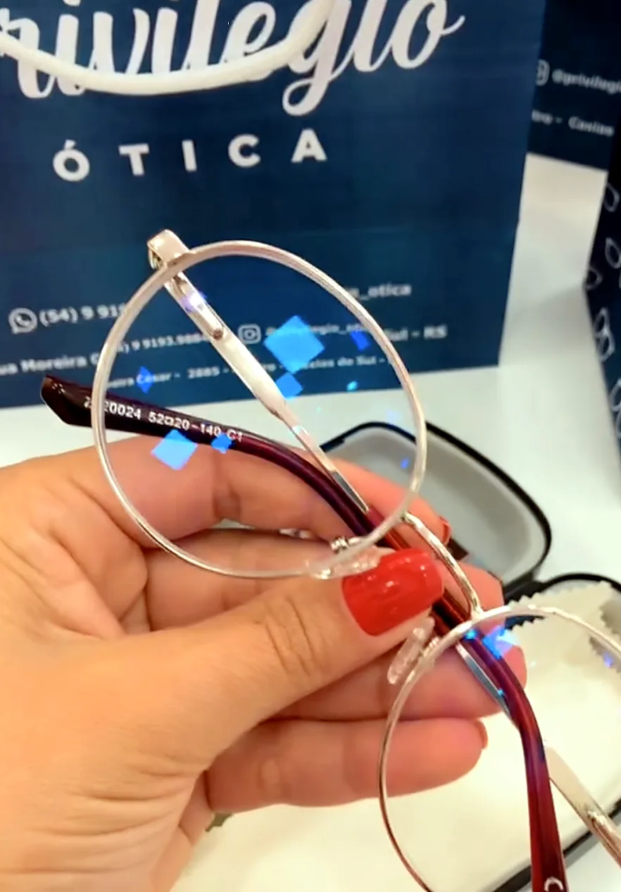
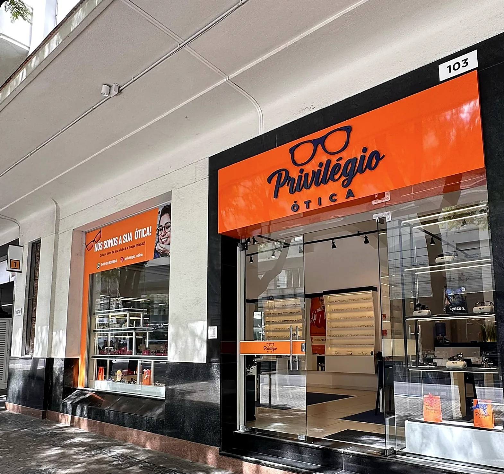
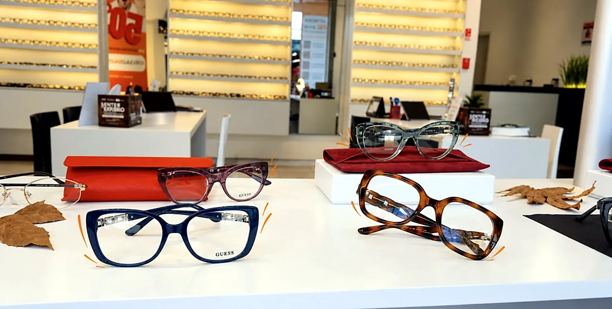
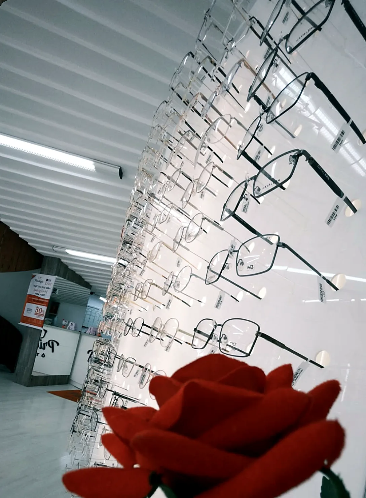
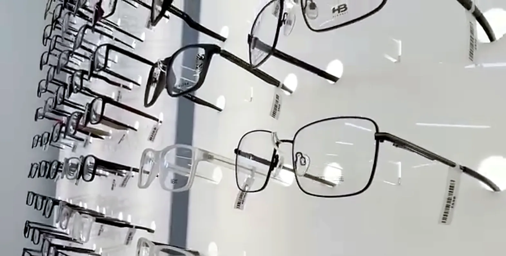
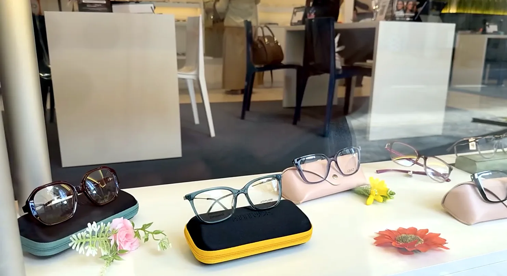
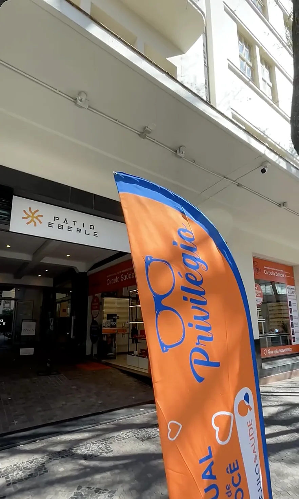

O detalhe que te valoriza.
Armações de grau, óculos de sol e lentes escolhidos com você, sem pressa, no centro de Caxias do Sul.
+2.000 histórias transformadas 5,0 no Google, 128 avaliações

Loja 103, Pátio Eberle Como chegar- +2.000 histórias transformadas
- Benefícios para clientes do Círculo
- Armações de grau e solar
- Consertos e higienização
- Caxias do Sul, Farroupilha e Carlos Barbosa
Um estilo para cada rosto.
Do trabalho ao fim de semana. Toque em um estilo e a gente separa as opções para você.
Escolha a sua.
Alguns modelos que estão na loja agora. Gostou de um? Ele abre direto no nosso WhatsApp.
Temos muito mais na loja. Peça fotos de outros modelos pelo WhatsApp.
Veja a diferença pela lente.
Cada lente muda o jeito de enxergar. Escolha uma e veja o efeito na foto.

Sem lente

Do primeiro oi ao óculos no rosto.
-
Chame no WhatsApp
Conte o que procura e mande a foto da sua receita, se já tiver.
-
Experimente na loja
Separamos armações que combinam com o formato do seu rosto e com o seu dia.
-
Ajuste e entrega
Montamos as lentes, ajustamos no seu rosto e você sai enxergando bem.

Quem é cliente faz parte do Círculo.
O Círculo Privilégio é o nosso jeito de cuidar de quem já escolheu a gente. Depois da compra, você continua sendo atendido.
- Benefícios exclusivos para clientes do Círculo
- Consertos, higienização e ajuste dos seus óculos na loja
- Dicas para cuidar das lentes e armações
Como escolher a armação certa para o meu rosto?
Rostos redondos ficam bem com armações mais retas; rostos quadrados, com modelos arredondados. Mas o que vale é você se sentir bem. Na loja, a gente experimenta junto até encontrar a sua.
Posso trazer a receita de qualquer oftalmologista?
Sim. Traga a receita na loja ou mande uma foto pelo WhatsApp para já conversarmos sobre as melhores lentes para você.
Qual a diferença entre as lentes?
Visão simples corrige uma distância. Multifocal corrige longe e perto na mesma lente. Filtros como luz azul, fotossensível e polarizado entram por cima para dar mais conforto. Veja o efeito de cada uma na seção de lentes.
Quanto tempo demora para ficar pronto?
Depende do tipo de lente e do grau. Informamos o prazo exato na hora do pedido.
Quais as formas de pagamento?
Aceitamos as formas tradicionais: dinheiro, Pix e cartões de débito e crédito. Pergunte pelo WhatsApp as condições do momento.
Qual o horário das lojas?
De segunda a sexta, a partir das 8h30 ou 9h, dependendo da unidade. Aos sábados, pela manhã. Veja o horário de cada unidade logo abaixo.
Vocês ajustam e limpam óculos?
Sim. Passe na loja para higienizar e ajustar seus óculos. Clientes do Círculo têm esse cuidado sempre que precisarem.
Nossa casa, seu estilo.
Um espaço pensado para você experimentar com calma. Guess, Carmim, HB e muitas outras marcas esperando por você.

A fachada, loja 103
Vitrine de outono
Cada armação, um detalhe
Grau para todos os rostos
Novidades na vitrine
Entrada pelo Pátio Eberle
Venha experimentar.
Três unidades na Serra Gaúcha, com o mesmo cuidado.
Caxias do Sul, RS